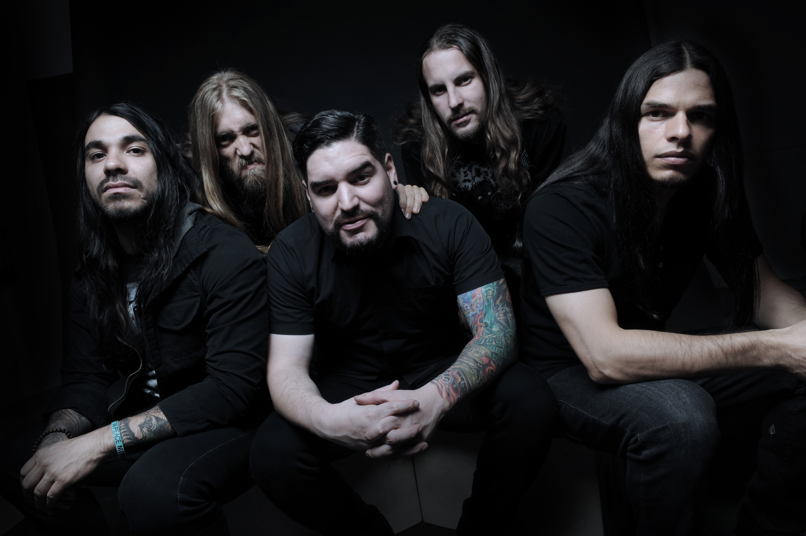
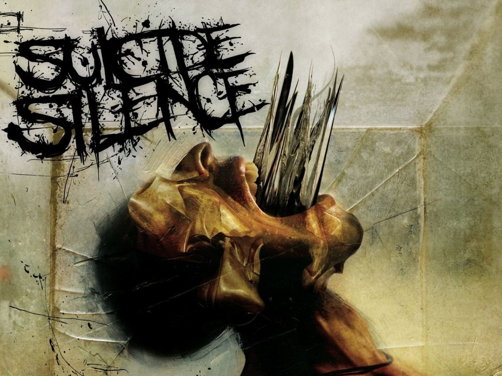

Suicide Silence


Группа Suicide Silence была основана в конце 2002 года. Её участники в это время играли в других местных группах.
Группа не была популярной и до 2004 года была на грани распада, до тех пор, пока её состав не был укреплен ещё одним гитаристом, а музыка не приобрела новое звучание.
Группа подписала контракт с Century Media и закончила запись своего студийного альбома The Cleansing, который появился в продаже 18 сентября 2007 года. Альбом дебютировал на Billboard 200 под номером 94, продав 7250 копий на первой неделе, и стал наиболее продаваемым дебютным альбомом в истории Century Media.
В июне 2009 года вышел их новый альбом No Time to Bleed на Century Media. EP-альбомы Wake Up и Disengage вышли в 2009 и 2010 годах соответственно.
Новый альбом группы под названием The Black Crown был выпущен 12 июля 2011 года на Century Media Records.
В 2012 году Suicide Silence переходят на Nuclear Blast Records и начинают работать над новым альбомом, который должен был выйти летом 2013 года.
Летом того же года, в поддержку грядущего альбома, музыканты вновь выступили в России: 17 июля в Москве и 18 июля в Санкт-Петербурге.